9. Credentials
Credentials are utilized for authentication when launching Jobs against machines, synchronizing with inventory sources, and importing project content from a version control system.
You can grant users and teams the ability to use these credentials, without actually exposing the credential to the user. If you have a user move to a different team or leave the organization, you don’t have to re-key all of your systems just because that credential was available in automation controller.
Note
Automation controller encrypts passwords and key information in the database and never makes secret information visible via the API. See Secret handling and connection security in the Administration Guide for details.
9.1. Understanding How Credentials Work
Automation controller uses SSH to connect to remote hosts (or the Windows equivalent). In order to pass the key from automation controller to SSH, the key must be decrypted before it can be written a named pipe. Automation controller then uses that pipe to send the key to SSH (so that it is never written to disk).
If passwords are used, automation controller handles those by responding directly to the password prompt and decrypting the password before writing it to the prompt.
9.2. Getting Started with Credentials
Open Automation Execution > Infrastructure > Credentials. The list can be searched and sorted.
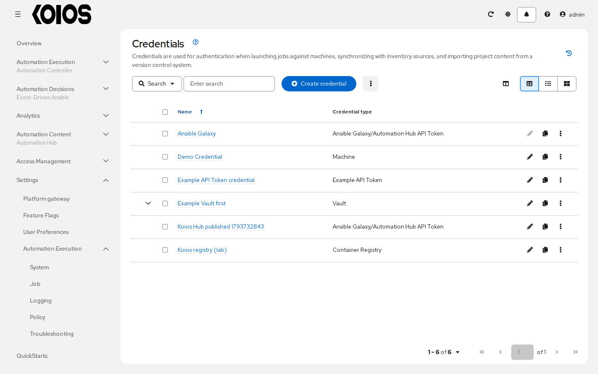
The platform provides a Demo Credential to get started. Click it to see its Details.
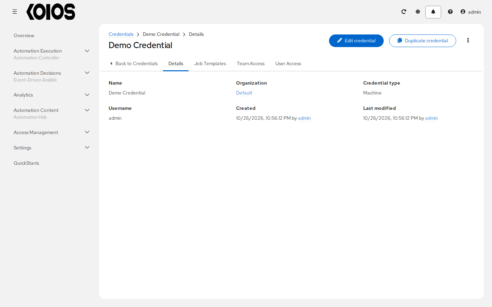
Edit credential changes it and Duplicate credential copies it.
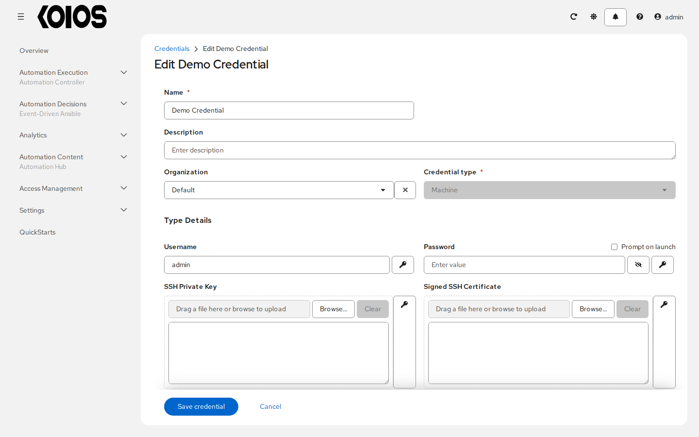
The User Access and Team Access tabs list the users and teams with roles on the credential; Assign users and Assign teams give roles to more of them. Users must exist first; see Users.
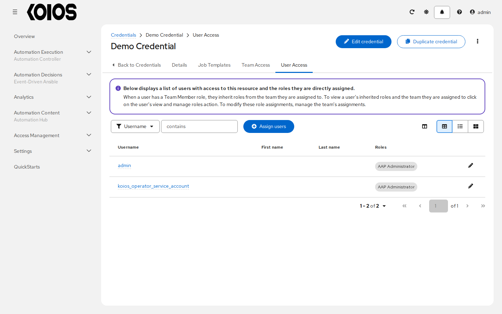
Note
Roles assigned directly on a credential stay when the credential moves to another organization.
The Job Templates tab lists the job templates that use the credential. To use it in another job template, edit that template; see Job Templates.
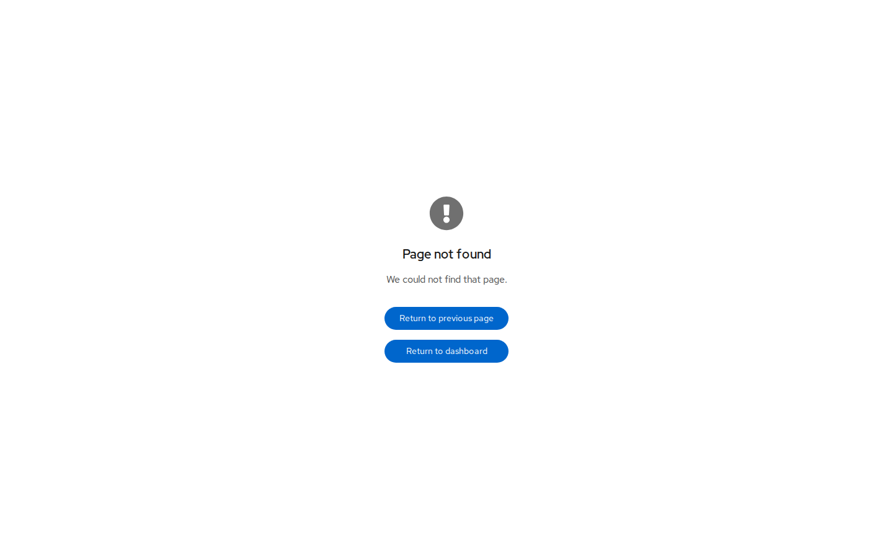
9.3. Add a New Credential
In the Credentials list, click Create credential.
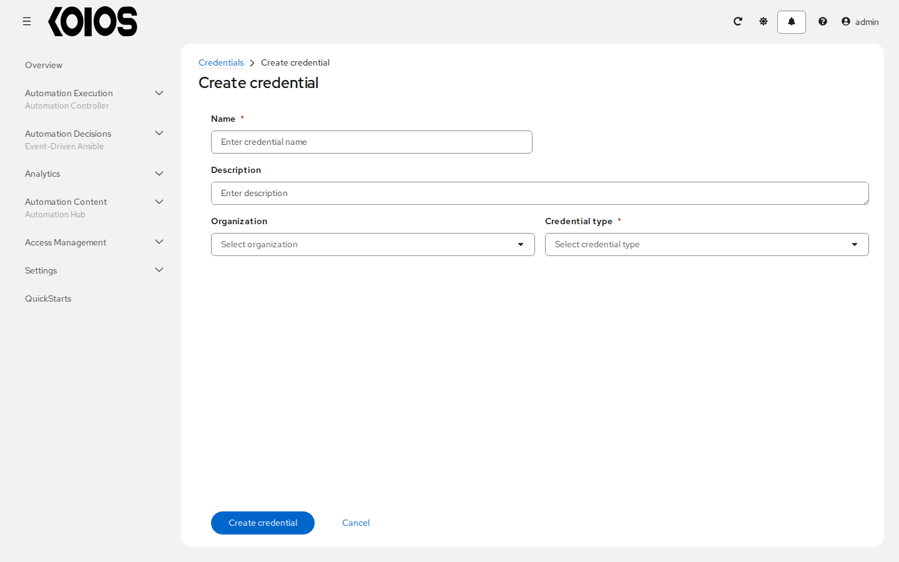
Enter the Name (required) and, optionally, a Description and the Organization of the credential.
Select the Credential type (required).
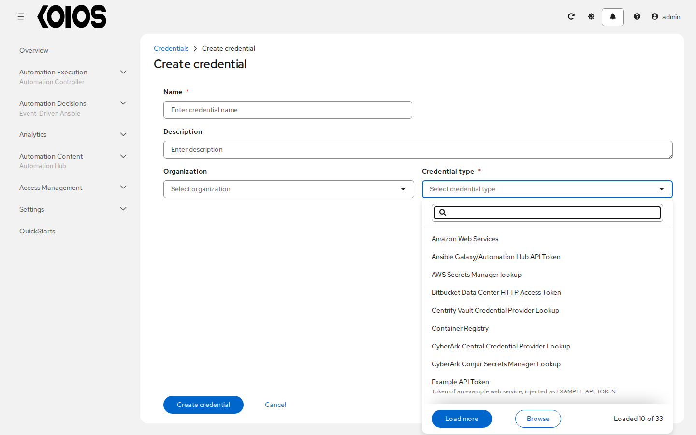
Enter the details of the type, described in Credential Types.
Click Create credential.
9.4. Credential Types
Koios Automation Platform 2026.11.8 provides 22 managed connection, project and token types, plus 10 external secret lookup types described in Secret Management System. The tables below mark fields required by the credential schema; a service can require additional values for the authentication method you choose.
If a managed type is missing after upgrading, check for a custom credential type with the same
name and kind. The controller preserves that custom type and logs a warning instead of replacing
its configuration. Have an administrator rename the custom type and restart the controller to
register the managed type. Also check whether an administrator set
KOIOS_LOAD_SUPPORTED_PLUGINS to False in spec.controller.extra_settings. Its default is
True; disabling it removes the additional plugin schemas and inventory sources from use,
without deleting existing credentials. See Automation Controller Configuration for operator configuration
and Custom Credential Types for custom types.
The following credential types are supported with automation controller:
9.4.1. Ansible Galaxy/Automation Hub API Token
Selecting this credential allows automation controller to access Galaxy or use a collection published on a local Automation Hub. See Using Collections via Hub for detail. Entering the Galaxy server URL is the only required value on this screen.
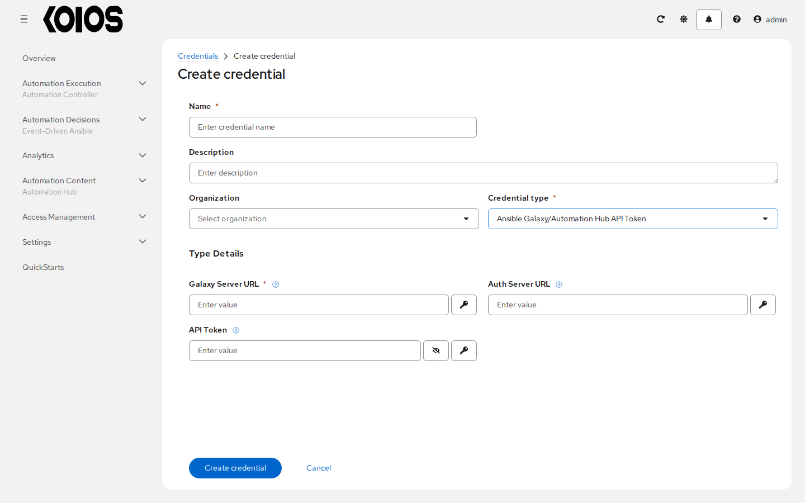
To use the automation hub of the platform, set Galaxy Server URL to
https://<koios host>/api/galaxy/content/published/ and API Token to a token of a platform
user; see Automation hub.
9.4.2. Container Registry
Selecting this credential allows automation controller to access a collection of container images. See What is a container registry? for more information.
Aside from specifying a name, the Authentication URL is the only required field on this screen, and it is already pre-populated with a default value. You may change this default by specifying the authentication endpoint for a different container registry.
9.4.3. Machine
Machine credentials enable automation controller to invoke Ansible on hosts under your management. Just like using Ansible on the command line, you can specify the SSH username, optionally provide a password, an SSH key, a key password, or even have automation controller prompt the user for their password at deployment time. They define ssh and user-level privilege escalation access for playbooks, and are used when submitting jobs to run playbooks on a remote host. Network connections (httpapi, netconf, and network_cli) use Machine for the credential type.
Machine/SSH credentials do not use environment variables. Instead, they pass the username via the ansible -u flag, and interactively write the SSH password when the underlying SSH client prompts for it.
Machine credentials have several attributes that may be configured:
Username: The username to be used for SSH authentication.
Password: The actual password to be used for SSH authentication. This password will be stored encrypted in the database, if entered. Alternatively, you can configure automation controller to ask the user for the password at launch time by selecting Prompt on launch. In these cases, a dialog opens when the job is launched, promoting the user to enter the password and password confirmation.
SSH Private Key: Copy or drag-and-drop the SSH private key for the machine credential.
Signed SSH Certificate: Optionally supply the SSH certificate corresponding to the private key, for example one obtained with HashiCorp Vault Signed SSH.
Private Key Passphrase: If the SSH Private Key used is protected by a password, you can configure a Key Password for the private key. This password will be stored encrypted in the database, if entered. Alternatively, you can configure automation controller to ask the user for the password at launch time by selecting Prompt on launch. In these cases, a dialog opens when the job is launched, prompting the user to enter the password and password confirmation.
Privilege Escalation Method: Specifies the type of escalation privilege to assign to specific users. This is equivalent to specifying the
--become-method=BECOME_METHODparameter, whereBECOME_METHODcould be any of the typical methods described below, or a custom method you’ve written. Begin entering the name of the method, and the appropriate name auto-populates.empty selection: If a task/play has
becomeset toyesand is used with an empty selection, then it will default tosudosudo: Performs single commands with super user (root user) privileges
su: Switches to the super user (root user) account (or to other user accounts)
pbrun: Requests that an application or command be run in a controlled account and provides for advanced root privilege delegation and keylogging
pfexec: Executes commands with predefined process attributes, such as specific user or group IDs
dzdo: An enhanced version of sudo that uses RBAC information in an Centrify’s Active Directory service (see Centrify’s site on DZDO)
pmrun: Requests that an application is run in a controlled account (refer to Privilege Manager for Unix 6.0)
runas: Allows you to run as the current user
enable: Switches to elevated permissions on a network device
doas: Allows your remote/login user to execute commands as another user via the doas (“Do as user”) utility
ksu: Allows your remote/login user to execute commands as another user via Kerberos access
machinectl: Allows you to manage containers via the systemd machine manager
sesu: Allows your remote/login user to execute commands as another user via the CA Privileged Access Manager
Note
Custom become plugins are available only starting with Ansible 2.8. For more detail on this concept, refer to Understanding Privilege Escalation https://docs.ansible.com/ansible/latest/user_guide/become.html and the list of become plugins https://docs.ansible.com/ansible/latest/plugins/become.html#plugin-list.
Privilege Escalation Username field is only seen if an option for privilege escalation is selected. Enter the username to use with escalation privileges on the remote system.
Privilege Escalation Password: field is only seen if an option for privilege escalation is selected. Enter the actual password to be used to authenticate the user via the selected privilege escalation type on the remote system. This password will be stored encrypted in the database, if entered. Alternatively, you may configure automation controller to ask the user for the password at launch time by selecting Prompt on launch. In these cases, a dialog opens when the job is launched, promoting the user to enter the password and password confirmation.
Note
Sudo Password must be used in combination with SSH passwords or SSH Private Keys, since automation controller must first establish an authenticated SSH connection with the host prior to invoking sudo to change to the sudo user.
Warning
Credentials which are used in Scheduled Jobs must not be configured as “Prompt on launch”.
9.4.4. Network
Select the Network credential type only if you are using a local connection with provider to use Ansible networking modules to connect to and manage networking devices. When connecting to network devices, the credential type must match the connection type:
For
localconnections usingprovider, credential type should be NetworkFor all other network connections (
httpapi,netconf, andnetwork_cli), credential type should be Machine
For an overview of connection types available for network devices, refer to Multiple Communication Protocols.
Automation controller uses the following environment variables for Network credentials and are fields prompted in the user interface:
ANSIBLE_NET_USERNAME
ANSIBLE_NET_PASSWORD
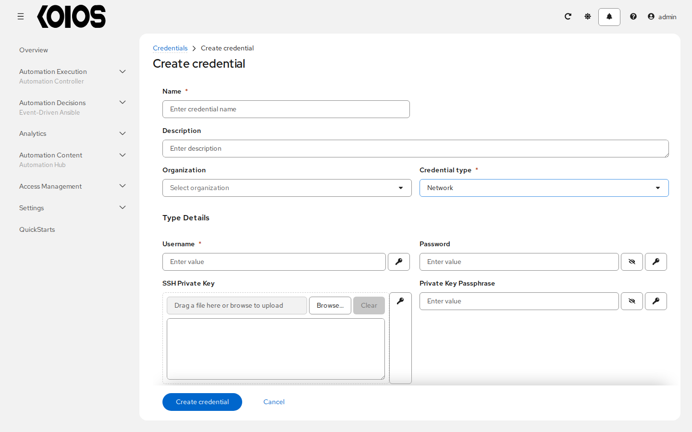
Network credentials have several attributes that may be configured:
Username: The username to use in conjunction with the network device (required).
Password: The password to use in conjunction with the network device.
SSH Private Key: Copy or drag-and-drop the actual SSH Private Key to be used to authenticate the user to the network via SSH.
Private Key Passphrase: The actual passphrase for the private key to be used to authenticate the user to the network via SSH.
Authorize: Select this from the Options field to control whether or not to enter privileged mode.
If Authorize is checked, enter a password in the Authorize Password field to access privileged mode.
For more information, refer to the Inside Playbook blog, Porting Ansible Network Playbooks with New Connection Plugins.
9.4.5. OpenShift or Kubernetes API Bearer Token
Selecting this credential type allows you to create instance groups that point to a Kubernetes or OpenShift container. For more information about this concept, refer to Container and Instance Groups.
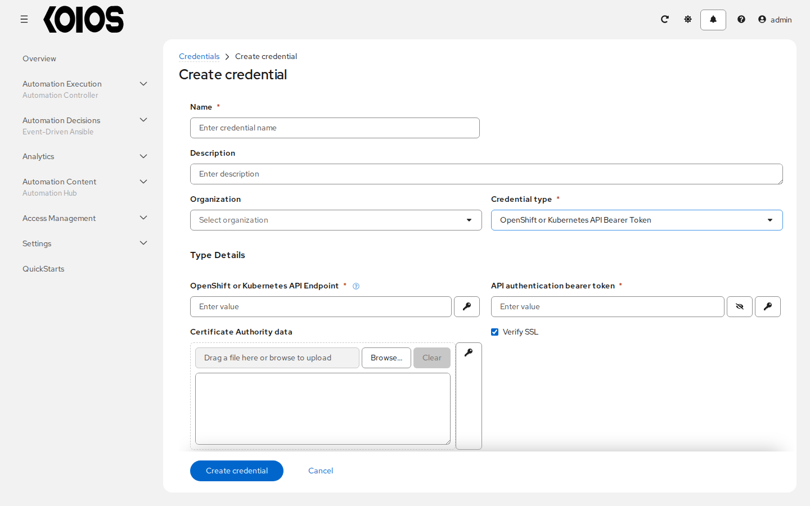
Container credentials have the following inputs:
OpenShift or Kubernetes API Endpoint (required): the endpoint to be used to connect to an OpenShift or Kubernetes container
API authentication bearer token (required): The token to use to authenticate the connection
Verify SSL: Optionally you can check this option to verify the server’s SSL certificate is valid and trusted. For an internal or private CA, keep verification enabled and supply the CA certificate in Certificate Authority data.
Certificate Authority data: include the
BEGIN CERTIFICATEandEND CERTIFICATElines when pasting the certificate, if provided
A ContainerGroup is a type of InstanceGroup that has an associated Credential that allows for connecting to an OpenShift cluster. To set up a container group, you must first have the following:
A namespace you can launch into (every cluster has a “default” namespace, but you may want to use a specific namespace)
A service account that has the roles that allow it to launch and manage Pods in this namespace
If you will be using execution environments in a private registry, and have a Container Registry credential associated to them in automation controller, the service account also needs the roles to get, create, and delete secrets in the namespace. If you do not want to give these roles to the service account, you can pre-create the
ImagePullSecretsand specify them on the pod spec for the ContainerGroup. In this case, the execution environment should NOT have a Container Registry credential associated, or automation controller will attempt to create the secret for you in the namespace.A token associated with that service account (OpenShift or Kubernetes Bearer Token)
A CA certificate associated with the cluster
This section describes creating a Service Account in an Openshift cluster (or K8s) in order to be used to run jobs in a container group via automation controller. After the Service Account is created, its credentials are provided to automation controller in the form of an Openshift or Kubernetes API bearer token credential. Below describes how to create a service account and collect the needed information for configuring automation controller.
To configure automation controller:
To create a service account, you may download and use this sample service account,
containergroup saand modify it as needed to obtain the above credentials.Apply the configuration from
containergroup-sa.yml:kubectl apply -f containergroup-sa.ymlCreate a token Secret for the service account; Kubernetes fills in its token and the CA of the cluster:
kubectl apply -n containergroup-namespace -f - <<'EOF' apiVersion: v1 kind: Secret metadata: name: containergroup-service-account-token annotations: kubernetes.io/service-account.name: containergroup-service-account type: kubernetes.io/service-account-token EOF
Wait until Kubernetes has filled in the Secret, then write the token and the CA certificate to files only you can read:
( set -euo pipefail; umask 077 S="secret/containergroup-service-account-token -n containergroup-namespace" for _ in $(seq 30); do [ -n "$(kubectl get $S -o jsonpath='{.data.token}')" ] && break; sleep 2; done kubectl get $S -o jsonpath='{.data.token}' | base64 -d > containergroup-sa.token kubectl get $S -o jsonpath='{.data.ca\.crt}' | base64 -d > containergroup-ca.crt chmod 600 containergroup-sa.token containergroup-ca.crt test -s containergroup-sa.token && test -s containergroup-ca.crt )
This token does not expire: delete the Secret to revoke it.
To use a token that expires instead, skip steps 3 and 4 and request one; the API server may grant a shorter duration than requested, so renew the credential before it expires. The CA certificate is the one of your kubeconfig:
( set -euo pipefail; umask 077 kubectl create token containergroup-service-account -n containergroup-namespace \ --duration=<time> > containergroup-sa.token kubectl config view --raw --minify \ -o jsonpath='{.clusters[0].cluster.certificate-authority-data}' | base64 -d > containergroup-ca.crt chmod 600 containergroup-sa.token containergroup-ca.crt )
Use the contents of
containergroup-sa.tokenandcontainergroup-ca.crtto provide the information for the OpenShift or Kubernetes API Bearer Token required for the container group.
9.4.6. Red Hat Ansible Automation Platform
Selecting this credential allows you to access a Red Hat Ansible Automation Platform instance.
Only Red Hat Ansible Automation Platform (the base URL) is required by the schema.
Supply either Username and Password, or OAuth Token, for the authentication method
of the remote controller. Verify SSL controls certificate verification and Request Timeout
defaults to 10 seconds.
9.4.7. Source Control
SCM (source control) credentials are used with Projects to clone and update local source code repositories from a remote revision control system such as Git or Subversion.
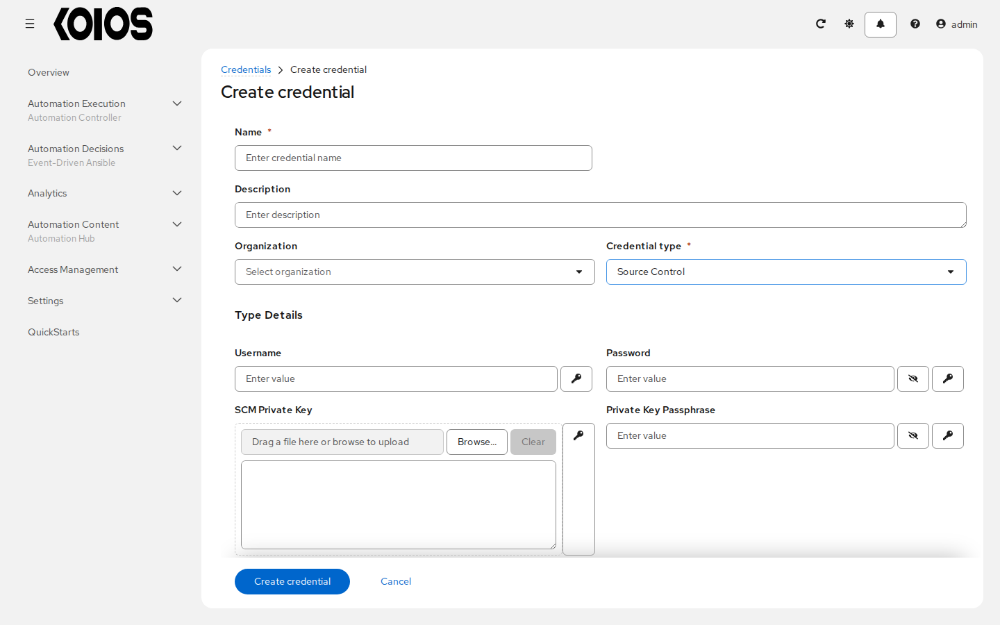
Source Control credentials have several attributes that may be configured:
Username: The username to use in conjunction with the source control system.
Password: The password to use in conjunction with the source control system.
SCM Private Key: Copy or drag-and-drop the actual SSH Private Key to be used to authenticate the user to the source control system via SSH.
Private Key Passphrase: If the SSH Private Key used is protected by a passphrase, you may configure a Key Passphrase for the private key.
Note
Source Control credentials cannot be configured as “Prompt on launch”. If you are using a GitHub account for a Source Control credential and you have 2FA (Two Factor Authentication) enabled on your account, you will need to use your Personal Access Token in the password field rather than your account password.
9.4.8. Vault
Use this credential to decrypt Ansible Vault-encrypted content while running automation.
Vault credentials require the Vault Password and an optional Vault Identifier if applying multi-Vault credentialing. For more information on automation controller Multi-Vault support, refer to the Multi-Vault Credentials section of the Administration Guide.
You may configure automation controller to ask the user for the password at launch time by selecting Prompt on launch. In these cases, a dialog opens when the job is launched, promoting the user to enter the password and password confirmation.
Warning
Credentials which are used in Scheduled Jobs must not be configured as “Prompt on launch”.
For more information about Ansible Vault, refer to: http://docs.ansible.com/ansible/playbooks_vault.html
9.4.9. Amazon Web Services
Use this credential for Amazon EC2 inventory synchronization or jobs that access AWS. Supply Access Key and Secret Key, and include STS Token when using temporary credentials. See Amazon EC2.
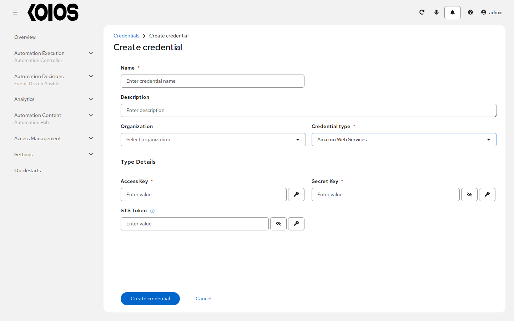
Field |
Required |
Details |
|---|---|---|
Access Key |
Yes |
Text value. |
Secret Key |
Yes |
Stored as an encrypted secret. |
STS Token |
No |
Security Token Service (STS) is a web service that enables you to request temporary, limited-privilege credentials for AWS Identity and Access Management (IAM) users. Stored as an encrypted secret. |
9.4.10. Bitbucket Data Center HTTP Access Token
Use this token with Bitbucket Data Center webhook status reporting. It is separate from a Source Control credential used to clone a repository. See Working with Webhooks.
Field |
Required |
Details |
|---|---|---|
Token |
Yes |
This token needs to come from your user settings in Bitbucket Stored as an encrypted secret. |
9.4.11. GitHub Personal Access Token
Use this token as the template’s Webhook credential to report job status to GitHub when the event supplies a status endpoint. Use a Source Control credential for repository checkout. See Working with Webhooks.
Field |
Required |
Details |
|---|---|---|
Token |
Yes |
This token needs to come from your profile settings in GitHub Stored as an encrypted secret. |
9.4.12. GitLab Personal Access Token
Use this token as the template’s Webhook credential to report job status to GitLab when the event supplies a status endpoint. Use a Source Control credential for repository checkout. See Working with Webhooks.
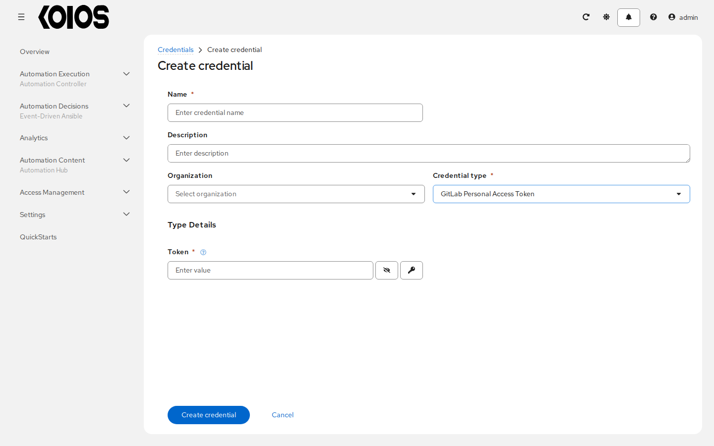
Field |
Required |
Details |
|---|---|---|
Token |
Yes |
This token needs to come from your profile settings in GitLab Stored as an encrypted secret. |
9.4.13. Google Compute Engine
Use the service account email address and its PEM RSA private key for Google Compute Engine inventory synchronization. Project is available but is not required by the credential schema. Supply the project information required by the inventory plugin. See Google Compute Engine.
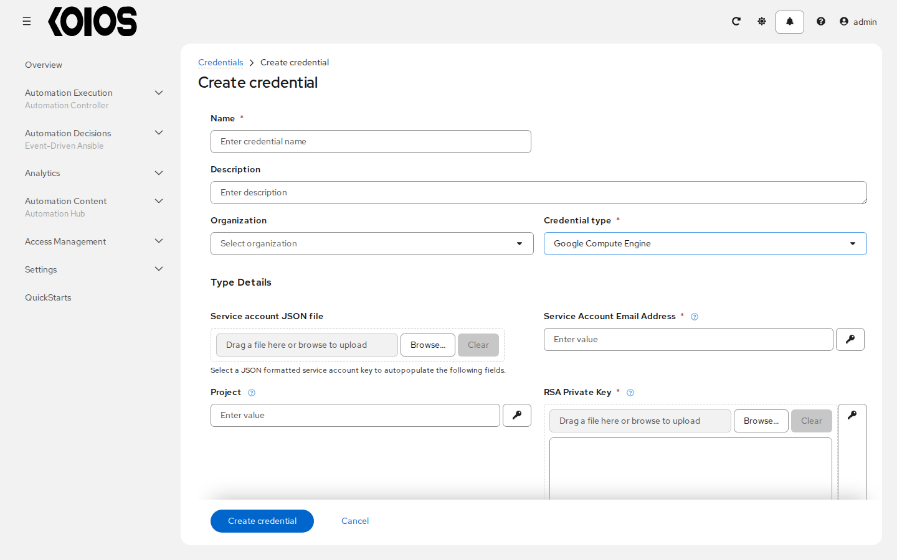
Field |
Required |
Details |
|---|---|---|
Service Account Email Address |
Yes |
The email address assigned to the Google Compute Engine service account. |
Project |
No |
The Project ID is the GCE assigned identification. It is often constructed as three words or two words followed by a three-digit number. Examples: project-id-000 and another-project-id |
RSA Private Key |
Yes |
Paste the contents of the PEM file associated with the service account email. Stored as an encrypted secret. |
9.4.14. GPG Public Key
Store the public key used to validate project content signatures. Select the credential in the project’s Content signature validation credential field; do not supply the private signing key. See Project Signing and Verification for the signing and verification workflow.
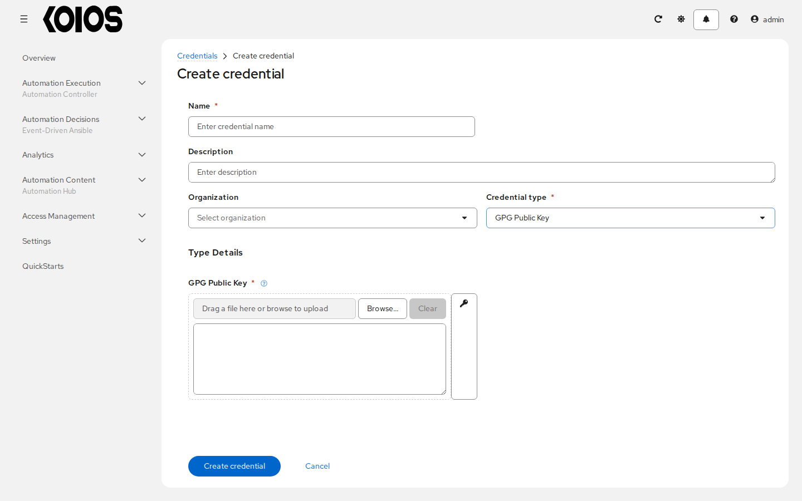
Field |
Required |
Details |
|---|---|---|
GPG Public Key |
Yes |
GPG Public Key used to validate content signatures. Stored as an encrypted secret. |
9.4.15. HCP Terraform
Use this credential for HCP Terraform automation. Set the hostname of the service and its API token. This is a different type from Terraform backend configuration, which the Terraform State inventory source selects.
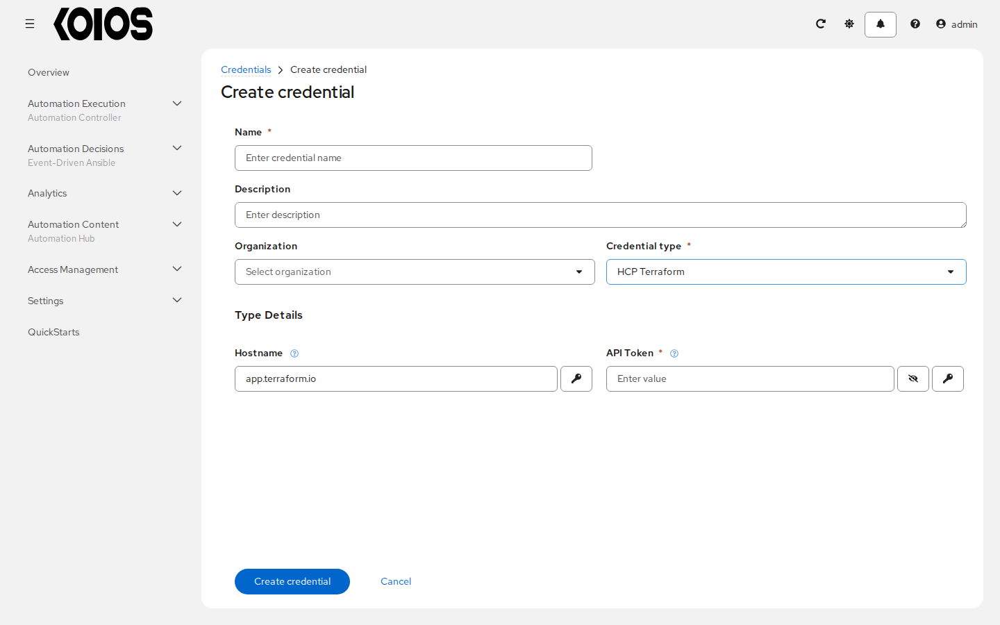
Field |
Required |
Details |
|---|---|---|
Hostname |
No |
The hostname of your HCP Terraform instance (e.g., app.terraform.io) Default: |
API Token |
Yes |
HCP Terraform API Token Stored as an encrypted secret. |
9.4.16. Insights
Use this credential for a Red Hat Insights project or inventory source. Provide Username and Password for basic authentication, or Client ID and Client Secret for a service account. The schema does not mark individual fields as required, but a working authentication method is still needed. When Client ID is present, the project credential injector selects service-account authentication; otherwise it selects basic authentication. See Red Hat Insights and Manage playbooks using source control.
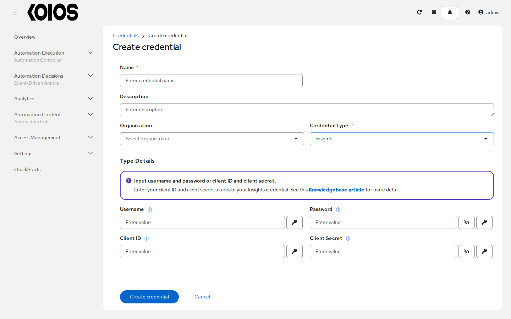
Field |
Required |
Details |
|---|---|---|
Username |
No |
Username is required for basic authentication. |
Password |
No |
Password is required for basic authentication. Stored as an encrypted secret. |
Client ID |
No |
Enter client ID to create a service account credential. |
Client Secret |
No |
Enter client secret to create a service account credential. Stored as an encrypted secret. |
9.4.17. Microsoft Azure Resource Manager
Use this credential for Azure inventory synchronization and automation. Subscription ID is schema-required. Provide the authentication values needed by your account, such as Client ID, Client Secret and Tenant ID for a service principal. The presence of username/password fields does not guarantee that an account or tenant permits that authentication method. See Microsoft Azure Resource Manager.
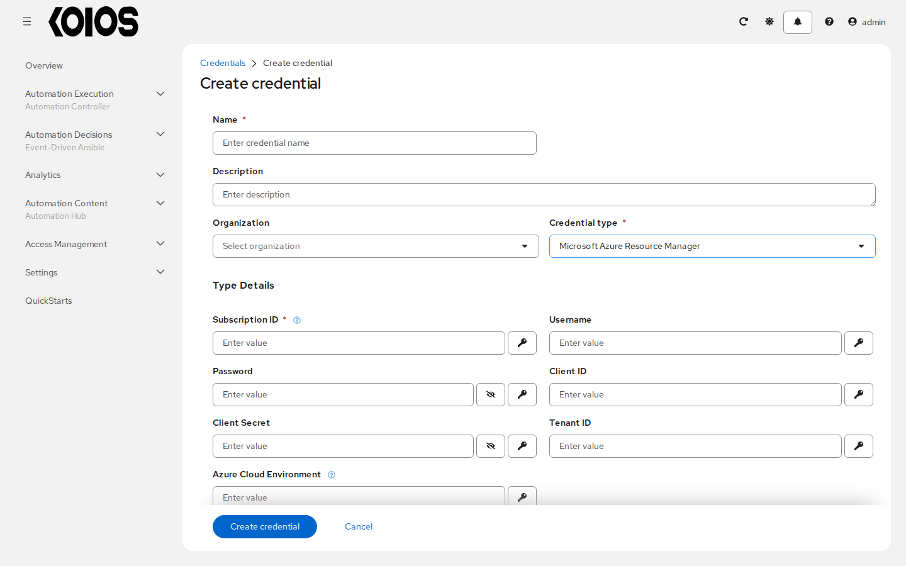
Field |
Required |
Details |
|---|---|---|
Subscription ID |
Yes |
Subscription ID is an Azure construct, which is mapped to a username. |
Username |
No |
Text value. |
Password |
No |
Stored as an encrypted secret. |
Client ID |
No |
Text value. |
Client Secret |
No |
Stored as an encrypted secret. |
Tenant ID |
No |
Text value. |
Azure Cloud Environment |
No |
Environment variable AZURE_CLOUD_ENVIRONMENT when using Azure GovCloud or Azure stack. |
9.4.18. OpenStack
Use this credential for OpenStack inventory synchronization and automation. The current type exposes username/password authentication, project, domain and region fields. It has no application-credential ID or application-credential secret fields. See OpenStack.
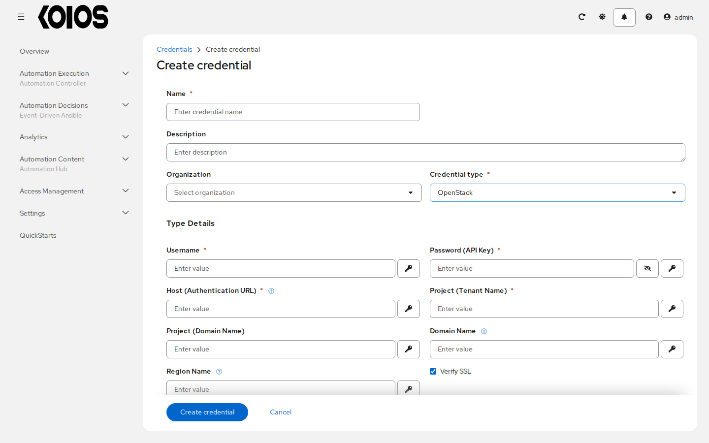
Field |
Required |
Details |
|---|---|---|
Username |
Yes |
Text value. |
Password (API Key) |
Yes |
Stored as an encrypted secret. |
Host (Authentication URL) |
Yes |
The host to authenticate with. For example, https://openstack.business.com/v2.0/ |
Project (Tenant Name) |
Yes |
Text value. |
Project (Domain Name) |
No |
Text value. |
Domain Name |
No |
OpenStack domains define administrative boundaries. It is only needed for Keystone v3 authentication URLs. Refer to the documentation for common scenarios. |
Region Name |
No |
For some cloud providers, like OVH, region must be specified |
Verify SSL |
No |
Default: |
9.4.19. Red Hat Satellite 6
Use this credential for Red Hat Satellite inventory synchronization with the Satellite URL, username and password. See Red Hat Satellite 6.
Field |
Required |
Details |
|---|---|---|
Satellite 6 URL |
Yes |
Enter the URL that corresponds to your Red Hat Satellite 6 server. For example, https://satellite.example.org |
Username |
Yes |
Text value. |
Password |
Yes |
Stored as an encrypted secret. |
9.4.20. Red Hat Virtualization
Use this credential to import Red Hat Virtualization inventory. CA File, when set, is an absolute path that must be readable inside the execution environment performing the update, not a path on the administrator’s workstation. See Red Hat Virtualization.
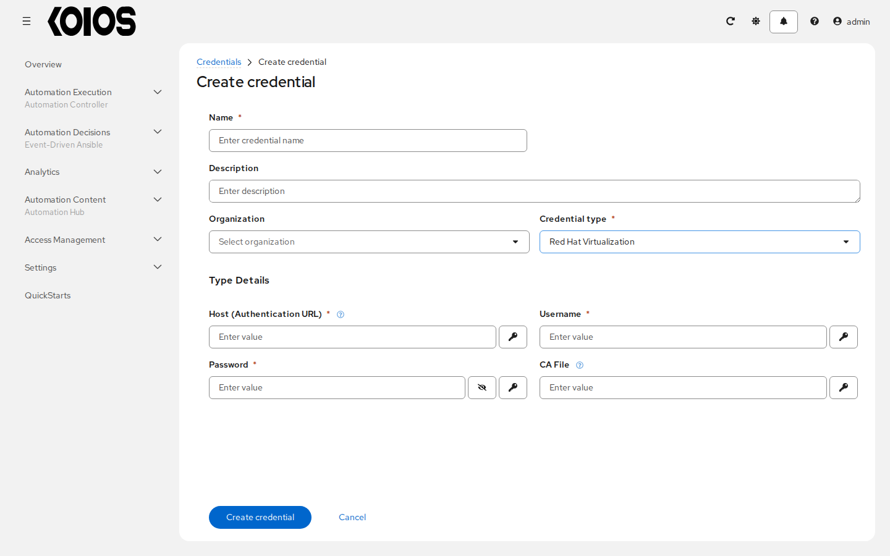
Field |
Required |
Details |
|---|---|---|
Host (Authentication URL) |
Yes |
The host to authenticate with. |
Username |
Yes |
Text value. |
Password |
Yes |
Stored as an encrypted secret. |
CA File |
No |
Absolute file path to the CA file to use (optional) |
9.4.21. Terraform backend configuration
Use this credential with the Terraform State inventory source. Supply backend settings in HashiCorp configuration language, and optionally Google Cloud Platform account credentials in JSON. The inventory execution environment must also contain the required Terraform binary and collection.
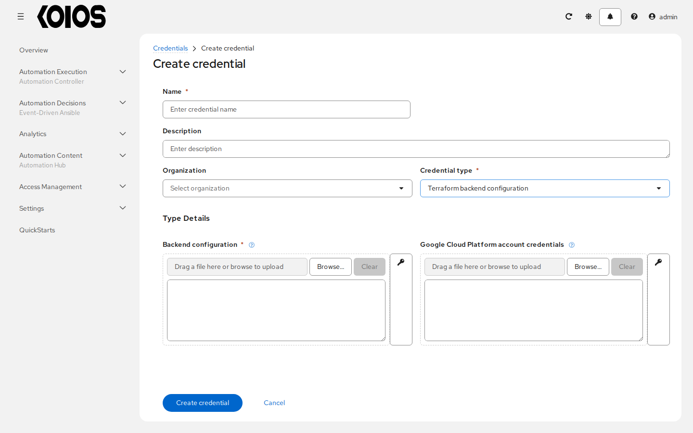
Field |
Required |
Details |
|---|---|---|
Backend configuration |
Yes |
Terraform backend config as Hashicorp configuration language. Stored as an encrypted secret. |
Google Cloud Platform account credentials |
No |
Google Cloud Platform account credentials in JSON format. Stored as an encrypted secret. |
9.4.22. VMware vCenter
Use this credential for VMware vCenter or VMware ESXi inventory sources. For an ESXi source, enter the ESXi endpoint and account in these same fields; there is no separate VMware ESXi credential type. See VMware vCenter and VMware ESXi.
Field |
Required |
Details |
|---|---|---|
VCenter Host |
Yes |
Enter the hostname or IP address that corresponds to your VMware vCenter. |
Username |
Yes |
Text value. |
Password |
Yes |
Stored as an encrypted secret. |